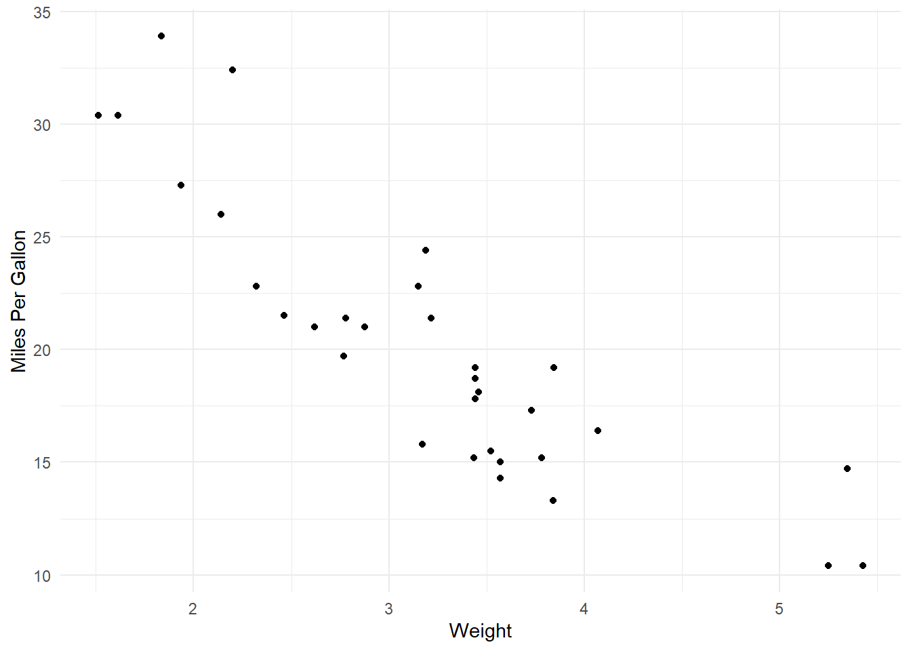

wrap the set of headers you want as tabsets with triple ::: (this is called a fence)::: panel-tabset *opening fence with panel-tabset option## Tab 1This is the content for the first tab.## Tab 2::: panel-tabset *opening fence nested### Nested Tab 1Content for nested tab 1### Nested Tab 2Content for nested tab 2::: *closing fence nested::: *closing fence
This should be done at the top of your quarto doc, typically after the yaml, and all wrapped in a R code chunk. All the loaded data will then be available throughout the rest of your document.
Code
```{r}#| label: setup#| message: false#| warning: false# Loading all your librarieslibrary(tidyverse)library(knitr)# Reading in data# Example: my_data <- read_csv("path/to/data.csv")# For this cheat sheet, we will use the built-in mtcars datasetmy_data <- mtcars```
Code chunks with options
Code
# Common chunk options:# echo: true/false -> Show or hide the code in the output.# eval: true/false -> Run or do not run the code.# warning: false -> Suppress warnings.# message: false -> Suppress messages.# include: false -> Run the code, but hide both code and output.print("This code is shown (echo: true) but not executed (eval: false).")
Inserting figures and figure captions
Code
```{r}#| label: fig-mpg#| fig-cap: "Scatterplot of Car Weight vs. MPG"ggplot(my_data, aes(x = wt, y = mpg)) +geom_point() +theme_minimal() +labs(x ="Weight", y ="Miles Per Gallon")```

Figure 1: Scatterplot of Car Weight vs. MPG
TipTip
Notice how we labeled the figure above with the option #| label: fig-mpg
We can then reference that figure in our text, for example…
As shown in Figure 1, heavier cars typically have lower MPG.
Table outputs
Code
```{r}#| label: tbl-summary#| tbl-cap: "Average MPG by Cylinder Count"my_data |>group_by(cyl) |>summarise(avg_mpg =mean(mpg)) |>kable() # kable() makes a clean markdown table```
Table 1: Average MPG by Cylinder Count
cyl
avg_mpg
4
26.66364
6
19.74286
8
15.10000
TipTip
This time we labeled the table above with the option #| label: tbl-summary
{fig-align="center" width=50% .lightbox}notice the addiional options set in the {}fig-align="center" - centers the imagewidth = 50% - scaled the original photo.lightbox - when user clicks on image full resolution pops up
Formulas with LaTeX
Insert inline math equations using a single dollar sign: $y = mx + b$.For centered display equations, use double dollar signs:$$E = mc^2$$
Insert inline math equations using a single dollar sign: \(y = mx + b\).
For centered display equations, use double dollar signs:
\[E = mc^2\]
Common example equations to get a feel for LaTex syntax
Fractions
$$\frac{1.5}{2.3}$$
\[
\frac{1.5}{2.3}
\]
Super and Sub Scripts
$$Y = X_1 + X_2$$$$Y = X^ + X^2$$
\[
Y = X_1 + X_2
\]\[
Y = X^ + X^2
\]
Square Roots
$$\sqrt{p^2}$$
\[
\sqrt{p^2}
\]
A little bit of everything
$$x_1 = \frac{-b \pm \sqrt{b^2 - 4ac}}{2a}$$
\[
x_1 = \frac{-b \pm \sqrt{b^2 - 4ac}}{2a}
\]
Linear Models
$$Y \sim X\beta_0 + X\beta_1 + \epsilo$$
\[
Y \sim X\beta_0 + X\beta_1 + \epsilon
\]
List of common mathematical symbols
In the above equations we used some common named symbols. Here are a few more…
For a more comprehenisve list check out this LaTex Wiki
Citations
Adding references to quarto document
Open your .qmd file in RStudio’s Visual Editor mode, go to the top menu, and click Insert > Citation…. You can search databases (like DOI, Crossref, DataCite, or PubMed). RStudio will automatically create a references.bib file for you
Open the YAML metadata block at the very top of your Quarto document and add the bibliography field pointing to your .bib file
---title:"My Research Document"author:"Your Name"format: htmlbibliography: references.bib---
Insert Citations in the Text
- Standard citation: This is a great paper [@heidmann2024].- In-text citation: @ault2024 has some cool things too.- Multiple citations: Several authors agree [@heidmann2024; @grove2024].
Ault, Jerald S, Jeremiah Blondeau, Laura Jay W Grove, Shannon L Cass-Calay, and Kevin J McCarthy. 2024. “Integrating the US Caribbean Reef Fish Visual Census into Fishery Stock Assessments.”Bulletin of Marine Science 100 (2): 283–312. https://doi.org/10.5343/bms.2023.0025.
Grove, Laura Jay W, Jeremiah Blondeau, Dione W Swanson, et al. 2024. “Expansion of an Established Fishery-Independent Survey into the US Virgin Islands’ Upper Mesophotic Zone: Feasibility and Management Implications.”Bulletin of Marine Science 100 (2): 113–32. https://doi.org/10.5343/bms.2023.0013.
Heidmann, Sarah L, Lauren K Olinger, Viktor W Brandtneris, et al. 2024. “Depth and Structure as Environmental Drivers of Fish Communities Across a Shallow to Mesophotic Gradient in the Northern US Virgin Islands.”Bulletin of Marine Science 100 (2): 133–54. https://doi.org/10.5343/bms.2023.0022.